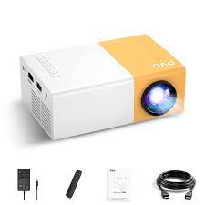

Definición
Un proyector es un dispositivo electrónico que se utiliza para mostrar imágenes, videos o contenido visual en una pantalla grande o superficie, como una pared o una pantalla de proyección. Funciona mediante la proyección de luz a través de una lente para ampliar y mostrar las imágenes en un tamaño considerablemente mayor que el de una pantalla de computadora o televisor estándar. Los proyectores se utilizan en una variedad de entornos, incluyendo salas de conferencias, salas de cine, aulas, teatros, y también en aplicaciones de entretenimiento en el hogar.
Ventajas
Pantalla grande: Los proyectores permiten proyectar imágenes y contenido en una pantalla grande o superficie, lo que es ideal para presentaciones, proyecciones de películas, visualización de contenido multimedia y más. Esto es especialmente útil en entornos donde se necesita que un grupo grande de personas vea la información o el entretenimiento.
Portabilidad: Muchos proyectores son portátiles y relativamente ligeros, lo que facilita su transporte y uso en diferentes lugares. Esto los hace ideales para presentaciones en el campo, en aulas o en empresas que requieren movilidad.
Interactividad: Algunos proyectores permiten la interacción directa con la pantalla proyectada, lo que es útil en entornos educativos y de negocios para realizar presentaciones interactivas.
Amplia conectividad: La mayoría de los proyectores están equipados con múltiples puertos y opciones de conectividad, lo que facilita la conexión a computadoras, dispositivos móviles, reproductores de medios y otras fuentes de contenido.
Desventajas
Espacio requerido: La proyección de imágenes a gran escala requiere un espacio adecuado para la distancia de proyección, lo que puede ser un desafío en entornos con espacio limitado.
Luminosidad y ambiente: Los proyectores son sensibles a la luz ambiental. En entornos muy iluminados, puede ser difícil obtener una imagen clara y vibrante, lo que limita su uso en ciertas condiciones.
Mantenimiento y costos: Los proyectores requieren un mantenimiento regular, como la sustitución de lámparas o fuentes de luz, lo que puede generar costos adicionales con el tiempo.
Mejores productos
Dentro de la plataforma de amazon el proyector más popular se trata de un mini proyector portátil con gran cantidad de entradas ya sea para móviles, pc, play5 etc...
